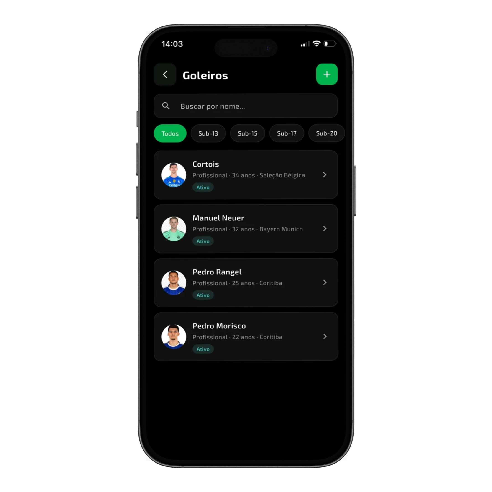
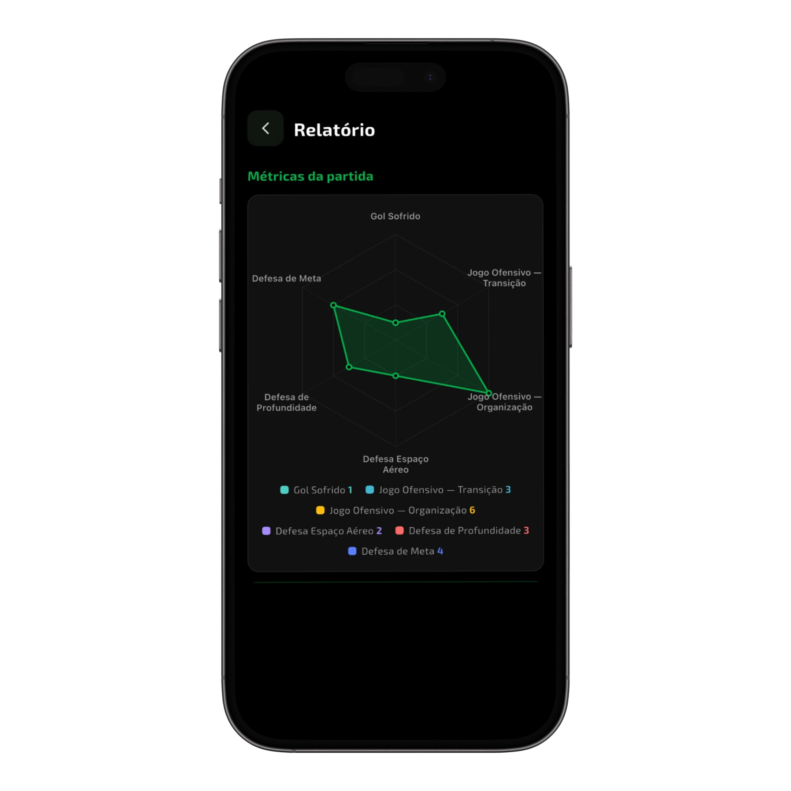
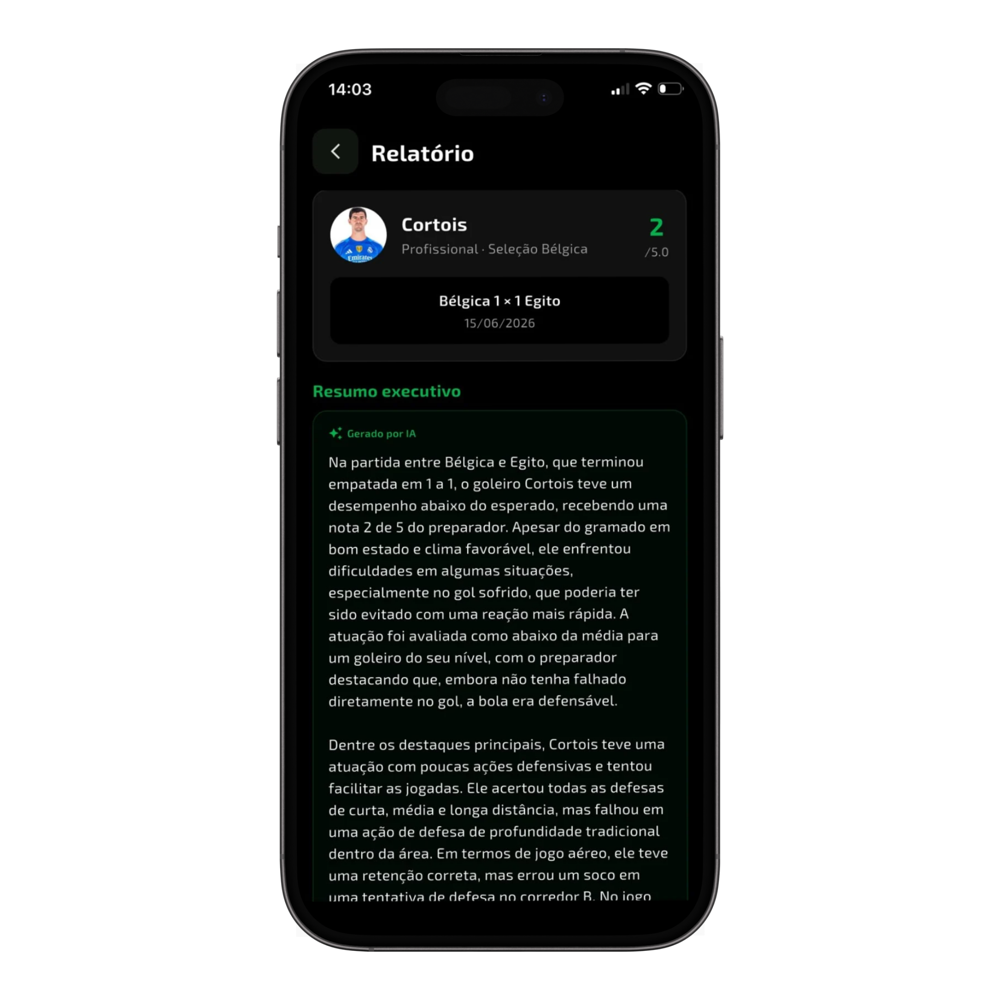
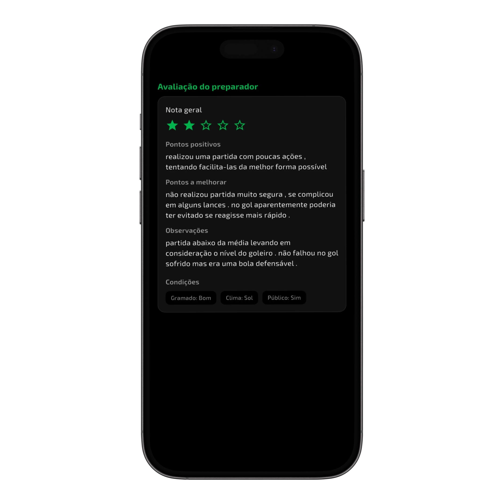
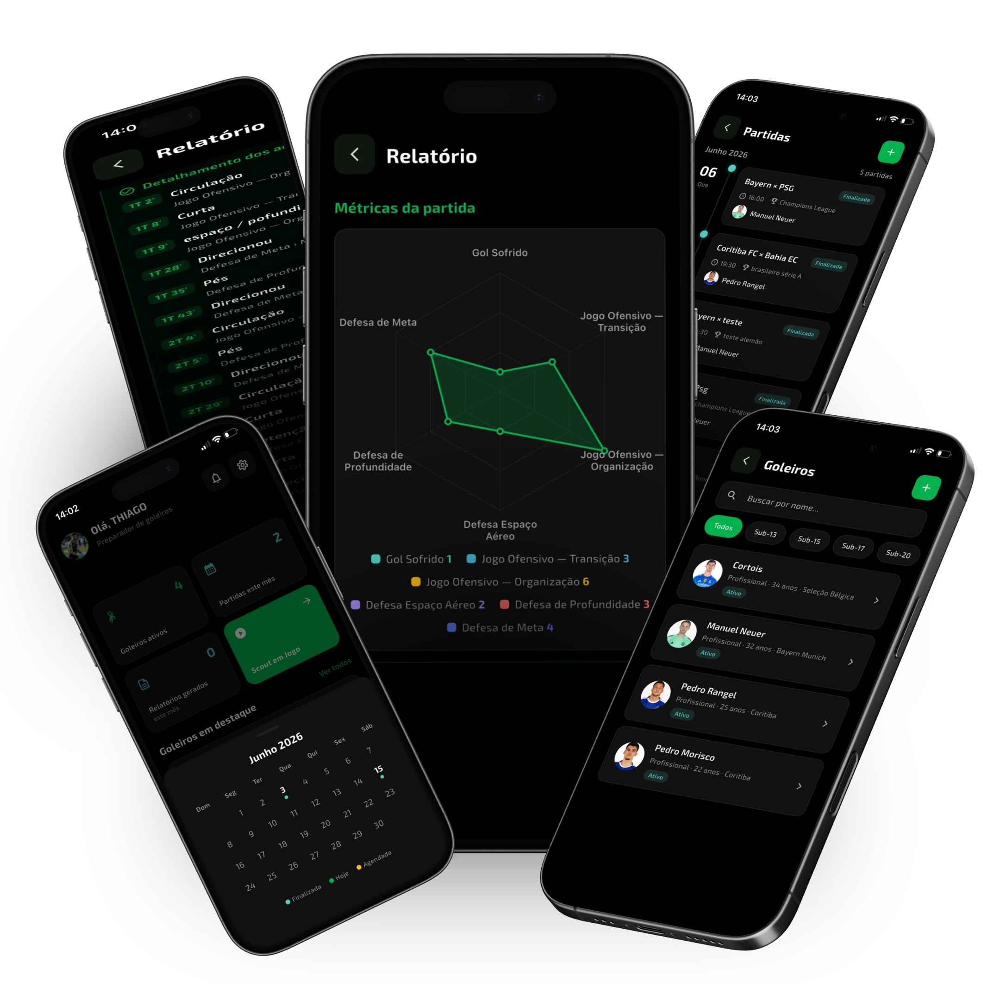
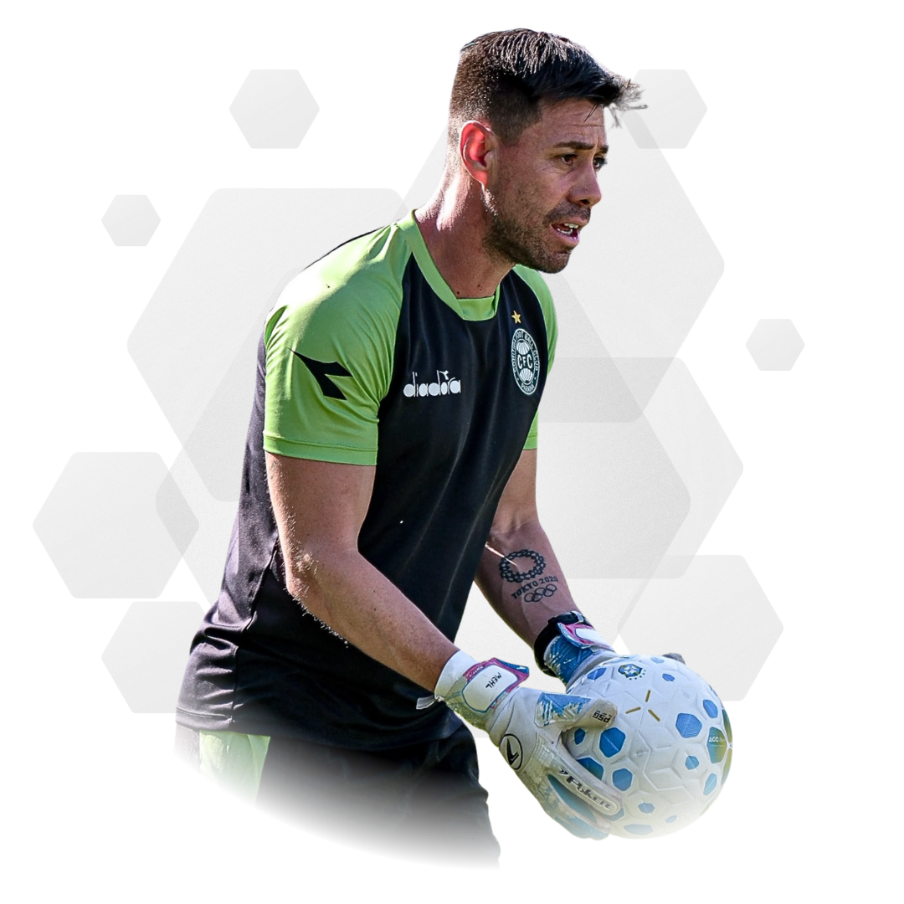
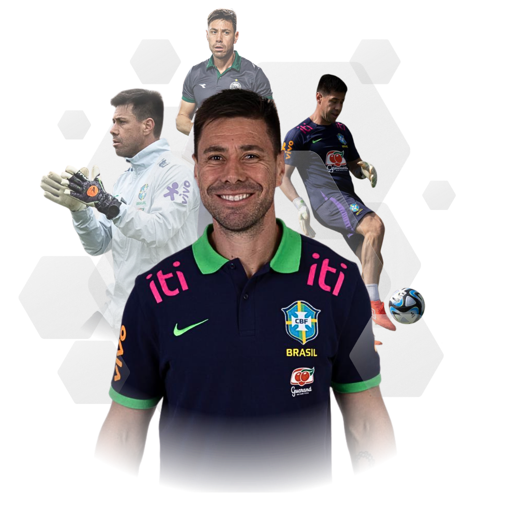

Histórico
Acesse e compare dados e informações a longo prazo

Baixar o appKeeper Scout
Transforme observações de jogo em informações organizadas para gerar feedbacks melhores, acompanhar a evolução dos goleiros e tomar decisões com mais confiança!





Telas reais do Keeper Scout
Keeper Scout: Controle absoluto e decisões estratégicas para a máxima evolução dos seus goleiros.
Conheça a Keeper ScoutVeja como o Keeper Scout transforma suas observações em informações para acompanhar a evolução dos goleiros.
Acesse e compare dados e informações a longo prazo
Analise a performance sem depender da memória
Acompanhe a evolução do goleiro a partir de métricas reais
Você assiste, analisa e orienta seus goleiros.
Mas o que acontece com estas informações depois que a partida termina?
- Profissionalismo na palma da mão -

Monte o perfil técnico completo dos seus atletas em segundos.
Insira os dados básicos do confronto (adversário, data, campeonato).
Clique para computar defesas, saídas de gol, reposições e falhas durante os 90 minutos.
O sistema cruza as marcações e monta gráficos limpos instantaneamente.
Envie o feedback profissional direto para o atleta ou comissão técnica e monitore a linha de evolução.
- Keeper Scout -
Intuitivo desde o primeiro toque. Cadastre jogadores e inicie o monitoramento de forma rápida, fluida e sem complicações.
Visão clara da sua agenda de jogos. Adicione uma partida e tenha todo o histórico e os próximos confrontos mapeados visualmente em um só lugar.
Com a agenda estruturada, você sabe exatamente qual goleiro e adversário vai monitorar, mantendo seu foco total apenas no desempenho em campo.
Cadastre um número ilimitado de goleiros e organize-os facilmente por categorias. Do plantel de base ao profissional, tenha todo o seu departamento na palma da mão.
Receba um resumo executivo gerado no apito final, com gráficos claros e dados visuais prontos para embasar seus feedbacks e apresentar à comissão técnica principal.
Visualize a frequência de cada ação através de gráficos limpos e precisos. Elimine o achismo e saiba exatamente onde o seu goleiro foi mais exigido e o que faltou acontecer no jogo.
Acesse a linha do tempo detalhada com todos os acertos da partida. Mostre ao seu goleiro o minuto exato de cada defesa e tomada de decisão crucial, potencializando a confiança e o feedback positivo.
Diagnóstico minuto a minuto. Mapeie as falhas cronologicamente e direcione os ajustes técnicos de forma rápida, precisa e livre de interpretações.
Diagnóstico minuto a minuto. Mapeie as falhas cronologicamente e direcione os ajustes técnicos de forma rápida, precisa e livre de interpretações.
Diagnóstico minuto a minuto. Mapeie as falhas cronologicamente e direcione os ajustes técnicos de forma rápida, precisa e livre de interpretações.
O problema é transformar o jogo em informação útil para que o goleiro evolua. Porque sem evolução, o controle não tem sentido.
- Mais organização, mais clareza, mais evolução. -
Toda a carreira e evolução do seu goleiro documentada em um só lugar.
Apresente dados visuais incontestáveis para a comissão técnica principal.
Compare o desempenho entre partidas e identifique padrões de erro ou evolução.
Entregue análises de alto nível para o atleta logo após o apito final.
Acesse dados históricos na palma da mão, sempre que precisar tomar uma decisão.

- Depoimentos -
Describe the service and how customers or clients can benefit from it.
Describe the service and how customers or clients can benefit from it.
Describe the service and how customers or clients can benefit from it.
Describe the service and how customers or clients can benefit from it.

Thiago MehlTreinador de goleirosExperiência em campo
Conhecimento de quem vive
o desenvolvimento de goleiros.
Thiago Mehl é treinador de goleiros com licença A da CBF e instrutor da CBF Academy nas licenças A e B e em cursos de treinamento de goleiros. É licenciado em Educação Física pela Universidade Positivo do Paraná.
Sua trajetória inclui Athletico Paranaense, Bahia, Paraná Clube, Vasco da Gama e Coritiba. Nas seleções brasileiras de base, atuou entre 2011 e 2018.
Em sua metodologia, integra aspectos físicos, técnicos e táticos aos momentos do jogo, estimulando a tomada de decisão e a leitura de situações imprevisíveis.
Athletico Paranaense · Bahia · Paraná Clube · Vasco da Gama · Coritiba · Seleções brasileiras de base
- Oferta especial de Lançamento -
de 12x de R$ 89,90
por 12x deR$ 49,90
Oferta por tempo limitado!
Quero assinar o Keeper Scout- Escolhe o sistema operacional do seu celular -
O KeeperScout é um aplicativo de scouting (observação e análise) de goleiros. Ele ajuda treinadores e preparadores a acompanhar o desempenho dos goleiros de forma organizada — registrando o que acontece em campo, transformando isso em dados e gerando relatórios claros para orientar o trabalho e a evolução de cada atleta.
Para treinadores de goleiros, preparadores, analistas e clubes — das categorias de base ao profissional. É útil tanto para quem acompanha um único atleta quanto para quem gerencia vários goleiros de diferentes categorias e equipes.
Você pode:
Durante o jogo você registra as ações do goleiro conforme elas acontecem — defesas, saídas, reposições, participações e outros fundamentos. O app organiza esses registros por categorias, para que nada importante se perca e você tenha um retrato fiel da atuação ao final da partida.
Os relatórios reúnem, em um só lugar, tudo o que foi registrado no scout de uma partida: os números, as categorias de ações e um resumo executivo que facilita a leitura rápida do desempenho. Servem como base para o feedback ao atleta e para o planejamento dos treinos.
Sim. Como cada partida e cada scout ficam registrados, o app permite acompanhar a evolução do goleiro ao longo dos jogos — ajudando a identificar pontos fortes, aspectos a melhorar e o progresso do trabalho.
Sim. Cada goleiro pode ser organizado por clube/equipe e categoria (base ou profissional, por exemplo), o que facilita gerenciar vários atletas e encontrar rapidamente as informações de cada um.
Sim, o KeeperScout é totalmente em português (pt-BR). Seus dados e os dos goleiros ficam associados à sua conta e são tratados conforme os Termos de Uso e a Política de Privacidade do app. Em caso de dúvidas, o próprio aplicativo tem uma área de suporte para falar com a equipe.